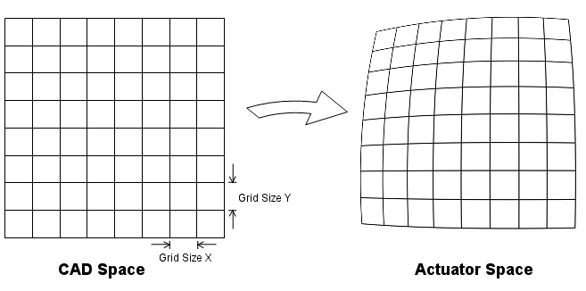
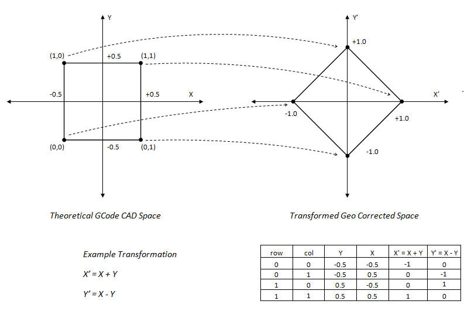

Geo Correction Table
The KMotion Coordinated Motion/Trajectory Planner/Kinematics Libraries contain a powerful Geometric Correction Capability. A Geometric correction table can be used to correct for Geometric distortion from the Theoretical CAD Space to the Corrected Actuator space.

The area of the CAD Space to be corrected is covered by a rectangular grid of measurement points (nodes). The grid is described by three numbers in each axis:
- Number of Rows and Columns - Columns run along X, Rows run along Y. A 3 column by 2 row table has 6 nodes.
- Grid Spacing X and Y - the distance between adjacent columns (X) and between adjacent rows (Y), in CAD units (inches). This is the pitch of the grid, not its overall size. A grid of 2 rows that spans from Y=-1.5 to Y=+1.5 has a Y Spacing of 3.0 (not 1.5).
- Grid Offset X and Y - the CAD coordinate of the first node (row 0, column 0). This positions (shifts) the whole grid in CAD Space.
Every node then has a defined CAD position:
CAD X of node(row,col) = Offset X + col * Spacing X
CAD Y of node(row,col) = Offset Y + row * Spacing Y
The data lines of the table give, for each node, the Actuator Space position that places the machine exactly at that node's CAD position (the position measured when the machine is physically at the ideal grid point). A CAD point falling within a grid rectangle uses a bilinear interpolation from the 4 nodes making up that rectangle to map to actuator space; the inverse mapping (actuator to CAD, used for the DROs) interpolates the same table the other way. Because of this, if a Spacing or Offset does not match where the nodes were really measured, the DROs will report the node's table coordinate rather than its true position.
There is also a Z coordinate associated with each grid point. The mapping applies this as a Z offset in order to flatten the XY plane if necessary. If no flattening is required then the z values should all be specified as zero in the table.
Normally a Geo Correction Table is defined to be large enough to map the entire range of motion of the system. However, for points outside the range of the Table the closest grid region is extrapolated to form the result. The largest Table currently allowed is a 4000x4000 array.
When a Geo Correction Table has been loaded Arcs are automatically broken into small line segments internally where each segment's endpoints are Geocorrected into actuator space. This is necessary because an Arc in CAD space in unlikely to still be an Arc in Actuator Space. The Trajectory Planner Collinear Tolerance Setting is used to determine how small of line segments are used. Line segment lengths will be chosen small enough to not deviate from the true Arc by more than the Collinear Tolerance. For most systems a value of 0.001 inches should be used.
The smallest possible Geo Table consists of a single rectangle consisting of 4 points (2 rows and 2 columns). In this case the entire infinite CAD Space plane is mapped to the Actuator Space using a single set of transformation equations.
The Example below shows how the table can be used to form a simple transformation:

Corresponding Geo File:
Simple 2x2 grid, Grid Spacing of 1 inch in X and 1 inch in Y, first node (row 0, col 0) at CAD (-0.5,-0.5) so the grid spans -0.5..+0.5 in both axes.
Then 4 grid points (row,col,X,Y,Z)
See file as <Install>\KMotion\Data\MeasurementsPlusMinus.txt
2,2
1,1
-0.5,-0.5
0,0,-1, 0, 0
0,1, 0,-1, 0
1,0, 0, 1, 0
1,1, 1, 0, 0
Geo Correction File Format
The file is plain text with comma separated values, one entry per line:
| Line | Contents | Meaning |
|---|---|---|
| 1 | NRows,NCols | number of rows (along Y) and columns (along X), each 2..4000 |
| 2 | SpacingX,SpacingY | distance between adjacent columns and between adjacent rows (CAD units) |
| 3 | OffsetX,OffsetY | CAD coordinate of node row 0, column 0 (the grid origin) |
| 4... | row,col,X,Y,Z | one line per node (NRows x NCols lines, any order): the Actuator Space X,Y at that node, and the Z offset to apply there (0 if no flattening) |
The row and column indices identify the node; its CAD position is always computed from the Spacing and Offset as shown above - it is not stored in the file. All values are absolute machine (CAD) coordinates in inches, independent of any Fixture or G92 offsets in effect.
Positioning (Shifting) the Grid
Only the Offset line determines where the grid sits in CAD Space. To move the grid, change OffsetX,OffsetY to the CAD coordinate where the first node (row 0, column 0 - the lowest X, lowest Y corner) should be; the Spacing values and all data lines stay the same. For example a 3 column x 2 row grid with columns 5 inches apart and rows 3 inches apart:
- centered on the machine origin: Offset
-5,-1.5(nodes at X = -5, 0, 5 and Y = -1.5, +1.5) - starting at the machine origin: Offset
0,0(nodes at X = 0, 5, 10 and Y = 0, 3)
Measure the table with the machine in the same coordinate frame the Offset is given in (machine coordinates, no fixture offset), or the correction will be applied shifted from where it was measured.
Worked example (3 columns x 2 rows, centered):
2,3
5,3
-5,-1.5
0,0,-4.760279,-1.111109,1.201516
0,1,0.113906,-1.368111,1.057638
0,2,4.849017,-1.707536,0.908999
1,0,-4.565361,1.871193,1.296117
1,1,0.257103,1.611877,1.241198
1,2,5.167226,1.254432,1.537146
Row 0 is the Y = -1.5 row and row 1 is the Y = +1.5 row (Offset Y -1.5 plus one Spacing Y of 3.0). Columns 0, 1, 2 are X = -5, 0, +5. The measured actuator positions are close to, but not exactly, the ideal node positions - those small differences are the geometric distortion the table corrects.
Common mistake: entering the Spacing as the half-width of the grid
instead of the node pitch. With 5,1.5 on line 2 in the example above the
table would place row 1 at Y = 0 instead of Y = +1.5. The machine still moves to
the measured positions, but standing physically on the top-right node the DRO
reads 5,0 (the node's table coordinate) instead of the expected 5,1.5. If the DRO
at a node does not read that node's intended CAD position, check the Spacing and
Offset lines first.